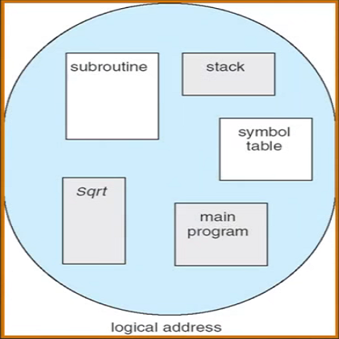
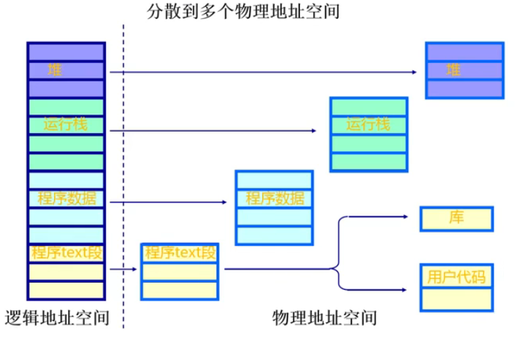
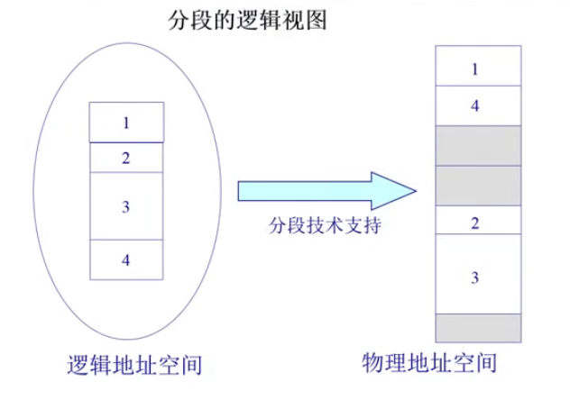
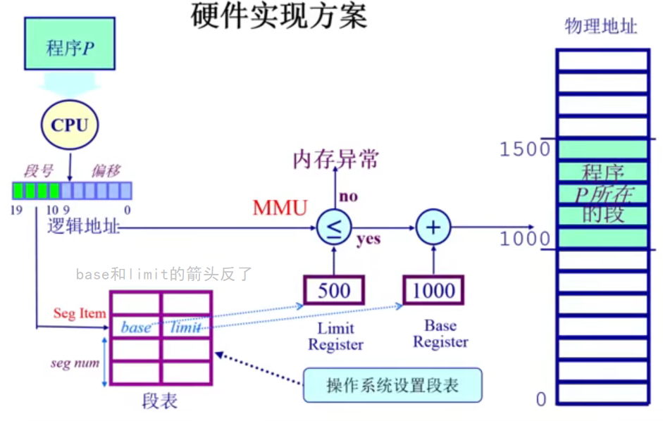
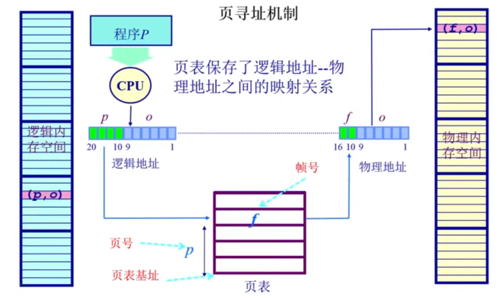

操作系统之 chapter4.1 非连续内存分配之分段与分页
这篇文章主要介绍操作系统的非连续内存分配，包括非连续内存分配的必要性、分段（segmentation）与分页（paging）技术。
非连续内存分配的必要性
第三章介绍的是连续内存管理，即：操作系统加载到内存以及程序加载到内存中时，分配一块连续的空闲内存块，但是容易出现碎片问题。这一章介绍的非连续内存分配，这可以有效的减少碎片的出现。
连续内存分配的缺点
- 分配给一个程序的物理内存是连续的
- 内存利用率低
- 有外碎片、内碎片的问题
能否通过一些手段来改善这些情况？非连续内存分配！
非连续内存分配的优点
- 分配给一个程序的物理内存是非连续的
- 更好的内存利用和管理
- 允许共享代码与数据（共享库等…）
- 支持动态加载和动态链接
非连续内存分配的缺点
建立虚拟地址和物理地址的转换难度大。
- 软件方案（开销相当大）
- 硬件方案（采用硬件辅助机制）
- 分段（segmentation）技术
- 分页（paging）技术
非连续内存分配
分段（segmentation）
分段
分段（segmentation）是一种非连续内存分配技术，用于操作系统中 管理进程的内存空间。在分段技术中，进程的内存空间被划分为多个段，每个段具有不同的大小和功能。
「段」：在程序执行时，会存在来自不同文件的函数和不同的数据字段。这些函数可能分布在程序的不同文件中，而数据字段则可以包括堆、栈、.bss、.data 等不同类型。
- 堆用于动态内存分配
- 栈用于函数调用和局部变量存储
- .bss 用于存储未初始化的静态变量
- .data 用于存储已初始化的静态变量
「分段」：更好的实现内存的分离和共享。
程序的分段地址空间如下图所示：

把左边运行程序的逻辑地址空间看成一个连续的一维线性数组，通过段机制的映射关系，把不同的内存块（如：代码、数据、堆、栈）分别映射到不同的内存中的段，可以看到映射到物理地址空间后，位置不一样，变得不连续了。
分段的逻辑视图，连续的逻辑地址空间被分配到物理空间中的不连续内存空间中：

段表
段表是一种数据结构，用于 存储和管理分段技术下的进程内存空间。它通常是一个数组或链表，每个元素表示一个段的相关信息。一个段对应着一个内存块。
下面是一个简化的段表数据结构示例：
1 | struct SegmentEntry { |
在这个示例中，每个段表项包含了以下信息：
segmentID：段的唯一标识符，用于区分不同的段。baseAddress：段的基址，指示段在内存中的起始位置。limit：段的界限，指示段的大小。通常以字节为单位。permissions：段的访问权限，用于控制对段的读、写和执行操作。
段表根据进程的需要进行动态更新，以反映内存中段的分配和释放情况。通过段表，操作系统可以轻松地查找和管理进程的各个段，实现内存隔离和安全性。
分段寻址方案
逻辑地址空间连续，但是物理地址空间不连续，使用映射机制进行关联。
程序访问物理内存地址需要：一个二维的二元组 (segmentID, addrOffset)，即 (段号, 段内偏移地址)。
操作系统会维护一张段表，以 segmentID 为索引，存储着 (baseAddress, limit) 信息。
因此，逻辑地址通过段表映射后的物理地址为：段号对应的段基址 + 二元组中的段内偏移地址
段表在寻址之前操作系统就已经建立好了，之后段机制就可以正常工作了。
分页（paging）
分页
分页（paging）是操作系统中的一种非连续内存分配技术。它将物理内存和逻辑内存进行分割：
- 将逻辑内存空间划分成相等大小的页面（page）
- 大小是 2 的幂，例如：512bytes / 4096bytes / 8192bytes
- 将物理内存空间也划分成相等大小的物理页帧（page frame）
- 大小是 2 的幂，例如：512bytes / 4096bytes / 8192bytes
逻辑空间中内存划分叫做页（page），物理空间中内存划分叫做页帧（page frame）；划分的 page 大小和 frame 大小要保持一致。
页到页帧的转换
页到页帧的转换方案（pages to page frames）/ 逻辑地址到物理地址的转换方案：
- 通过页表（page table）
- 内存管理单元（MMU）/ 快表（TLB）
帧（Frame）
物理内存被分割为大小相等的帧，一个内存的物理地址是一个二元组 (f, o)：
f为页帧号（一共有 $F$ 位，可以表示 $2^F$ 个不同的页帧）o为页帧内偏移（一共有 $S$ 位，每个页帧有 $2^S$ 字节）
页帧位占用高地址空间，页帧内偏移位占用低地址空间。二元组对应的物理地址为 $addr = 2^{S} \times f + o$。
好比一本书，一共有 $2^F$ 页，每页最多可以写 $2^S$ 个字，当前打开的页面是第 $f$ 页，笔处在本页第 $o$ 个字的位置，处在全书第 $2^{S} \times f + o$ 个字的位置。
举个栗子：一个由 $16 bit$ 组成的地址空间，$9 bit$ 大小（512 字节）的页帧，物理地址的二元组为 $(3,6)$，请问物理地址是多少？
由描述可知，$S=9, F=16-9=7, f=3, o=6$，二元组对应的物理地址为 $2^{9} \times 3 + 6 = 1542$。
分页和分段的最大区别：这里的 $S$ 是一个固定的数，即每页页帧大小相同，而分段中的段的大小不固定。
页（Page）
进程的逻辑地址空间被划分为大小相等的页，一个进程的逻辑地址是一个二元组 (p, o)：
p为页号（一共有 $P$ 位，可以表示 $2^P$ 个不同的页）o为页内偏移（一共有 $S$ 位，每页有 $2^S$ 字节）
二元组对应的逻辑（虚拟）地址为 $addr = 2^{S} \times p + o$。
通常页号大小 不等于 页帧号大小（即 $p \neq f$），页内偏移跟页帧内偏移大小一致，页和页帧的字节数大小一致。
页寻址方案
页寻址要解决的就是，如何通过逻辑地址访问到对应的物理内存空间的数据。
当进程需要访问一个逻辑地址时，操作系统将逻辑地址分成两个部分：页号（page number）和页内偏移（page offset）。页号用于索引页表（page table），页表记录了每个页号对应的物理页帧号。通过找到页表中对应的物理页帧号，再加上页内偏移，就可以得到实际的物理地址，从而进行物理内存访问。
页寻址过程：逻辑地址 -> 页号 -> 查找页表 -> 物理页帧号 -> 利用页内偏移 -> 实际物理地址 -> 物理内存访问。
- 页表保存了逻辑地址到物理地址的映射关系（页号：物理页帧号）
- 实际上，逻辑地址空间大于物理内存空间
- 页映射到帧
- 页是连续的虚拟内存（逻辑地址中的页号是连续的）
- 帧是非连续的物理内存（物理地址中的帧号是不连续的），有助于减少碎片的产生
- 不是所有的页都有对应的帧
为什么逻辑地址映射到物理地址空间后的内存是不连续的？
这是因为页寻址时，通过查找页表，将进程的连续页号 $p$ 映射到不连续的页帧号 $f$，不连续的页帧号对应着不连续的物理内存块。
参考资料：
1：https://github.com/OXygenMoon/OperatingSystemInDepth
2：https://blog.csdn.net/weixin_53407527/article/details/124891795